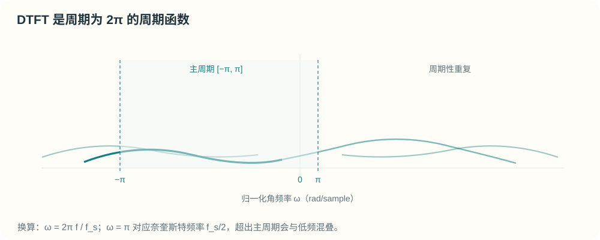
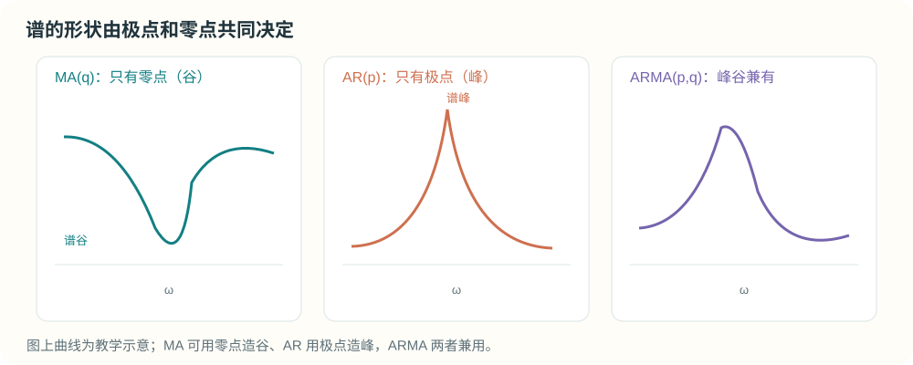
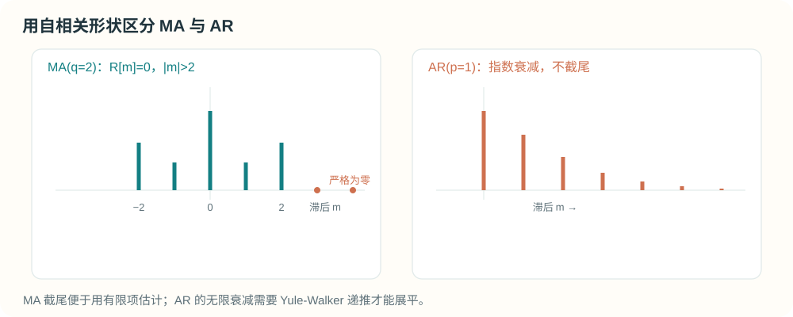

CHAPTER 14 · 系统与模型
平稳序列与离散系统
把连续时间结论搬到离散时间，要换的不只是积分号：频率变成以 2π 为周期的归一化角频率，白噪声的功率变为有限，而参数化模型（AR/MA/ARMA）让谱估计成为可能。
- 写出离散维纳-辛钦定理并说明 DTFT 的周期约定
- 说明离散白噪声为何有有限功率，与连续理想白噪声不同
- 写出 AR/MA/ARMA 的谱表达式、平稳条件与 Yule-Walker 方程
从连续时间到离散序列
以采样周期 Ts 采样得到 X[n]=X(nTs)。离散宽平稳（WSS）的定义与连续版对应：均值为常数，自相关只依赖滞后 m=n₂−n₁。自相关序列满足 R[0]=E[|X[n]|²]≥0、|R[m]|≤R[0]、以及实序列的对称性 R[−m]=R[m]。
离散维纳-辛钦定理把自相关与功率谱连成一对离散时间傅里叶变换（DTFT）：
三个必须记牢的差异：频率是归一化角频率 ω（rad/sample），主周期取 [−π,π]；DTFT 以 2π 为周期；逆变换在有限区间上积分。换算关系为 ω=2πf/fs，因此 ω=π 对应奈奎斯特频率 fs/2。

离散白噪声：功率是有限的
离散白噪声 ε[n] 均值为零、不同时刻不相关、每个样本方差为 σ²，即 Rε[m]=σ²δ[m]。代入 (14.1) 得到平坦的谱，以及有限的平均功率：
与连续时间的关键区别：连续时间理想白噪声的功率谱在整个实频轴上都为常数，总功率发散（第 10 章）。离散白噪声的谱只在有限的主周期 [−π,π] 上有定义，积分结果就是 σ²，因此功率总是有限的。采样本身就隐含了带宽限制。
“白”仍不等于“独立”：Rε[m]=0（m≠0）只说明不相关。只有 ε[n] 还是联合高斯（或其边缘 iid 且联合独立）时才能说样本独立。这与前面几章的结论一致。
离散 LTI 系统：公式一一对应
设离散 LTI 系统的单位脉冲响应为 h[n]，输入 WSS 序列 X[n]，输出 Y[n]=Σkh[k]X[n−k]。在 Σ|h[n]|<∞（稳定）前提下，第 12–13 章的所有结论都有离散版本：
| 统计量 | 离散域公式 |
|---|---|
| 输出均值 | μY=μX·H(ej0)=μXΣnh[n] |
| 互相关 | RXY[m]=RX[m]∗h[m] |
| 输出自相关 | RY[m]=RX[m]∗h[m]∗h[−m] |
| 输出功率谱 | SY(ejω)=|H(ejω)|²·SX(ejω) |
| 总输出功率 | (1/2π)∫−ππSY(ejω)dω |
注意总输出功率的积分区间是主周期 [−π,π]，不是整个实轴——这是与连续时间公式唯一的“形状”差异。离散域的优势在于可以精确实现任意因果 h[n]，不受模拟元件容差限制。
AR / MA / ARMA：用少数参数描述谱形
三类模型都把序列看作白噪声通过有理系统生成，区别在于用输入延迟还是输出延迟。
MA(q)（滑动平均）：X[n]=ε[n]+b₁ε[n−1]+…+bqε[n−q]，谱为 S(ejω)=σ²|B(ejω)|²，自相关在 |m|>q 后严格为零（截尾）。MA 总是平稳的。
AR(p)（自回归）：X[n]=a₁X[n−1]+…+apX[n−p]+ε[n]，谱为 S=σ²/|A(ejω)|²，其中 A(z)=1−Σiaiz−i。自相关无限延续、按指数衰减；平稳条件为 A(z) 的根都在单位圆外（|z|>1）。
AR 的核心工具是Yule-Walker 方程：
ARMA(p,q) 结合两者：S(ejω)=σ²|B(ejω)|²/|A(ejω)|²，平稳性仍由 A(z) 的根决定。用更少参数即可同时描述谱峰与谱谷。


验证 AR(1) 的 Yule-Walker 与谱积分
对 AR(1)：X[n]=aX[n−1]+ε[n]，|a|<1，白噪声方差 σ²，有 R[k]=σ²a|k|/(1−a²)，PSD 为 σ²/(1−2a·cosω+a²)。下面同时检查递推关系与总功率。
from math import pi, cos, isclose
a, s2 = 0.7, 1.0
R = lambda k: s2*a**abs(k)/(1-a*a)
assert isclose(R(0), a*R(1)+s2, abs_tol=1e-12) # Yule-Walker at k=0
for k in range(1, 6): # recursion for k>=1
assert isclose(R(k), a*R(k-1), abs_tol=1e-12)
N = 20000
dw = 2*pi/N
total = 0.0
for i in range(N):
w = -pi + (i+0.5)*dw
total += s2/(1-2*a*cos(w)+a*a)*dw
assert isclose(total/(2*pi), R(0), rel_tol=1e-6) # PSD integrates to power
自检：MA(2) 的自相关在滞后 3 处一定为零吗？
一定。MA(q) 的自相关在 |m|>q 后严格截尾为零，这是它的定义性特征。反过来，若观察到自相关在有限滞后后为零，就可优先考虑 MA 模型。
边界：阶数选择与前提条件
- 阶数是偏差-方差权衡：阶数太低，谱被过度平滑（高偏差）；阶数太高，模型开始拟合噪声，出现对数据段敏感的虚假谱峰（高方差）。可用 AIC/BIC 给出参考阶数，并从低阶逐步增加，观察谱是否稳定。
- 平稳性前提：AR/MA/ARMA 的参数化描述建立在 WSS 之上。含有趋势项、时变参数或强周期成分时，应先去除这些成分，否则递推关系不成立。
- 根的位置要检查：拟合 AR/ARMA 后应确认 A(z) 的根在单位圆外；根贴近单位圆意味着谱峰极窄且对扰动敏感。
- 不相关不等于独立：即使残差看起来“白”（自相关为零），也不意味着它们是独立的，除非额外假设高斯。
下一章将把高斯假设提升为主要对象：一旦过程是联合高斯，均值与协方差就完全决定它的所有有限维分布。
参考与核查依据
- ProbabilityCourse · Autocorrelation and PSD：离散谱与自相关的变换关系背景。
- MIT OpenCourseWare · Random Processes：平稳序列与其线性变换的统计量传递。
- ProbabilityCourse · Stationary Processes：宽平稳序列的定义与自相关性质。